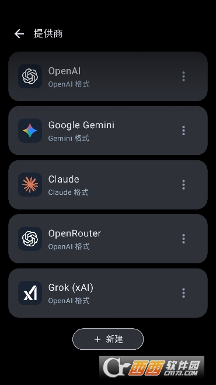
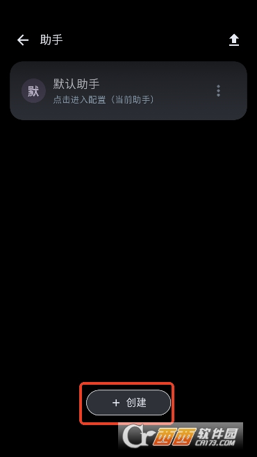

深夜聊到三点，我终于把那个赛博朋克角色从网页端搬进了本地
一个折腾党的深夜故事——从网页端 AI 聊天的各种不痛快，到发现 MineChat 后折腾模型切换、导入角色卡、搭世界书，终于把那个聊了三个月的赛博朋克女孩从云端拽回了本地。
凌晨两点四十七分，我盯着浏览器里那个聊了快三个月的赛博朋克女孩，对话框里最后一条消息停在"她转身走进义体诊所的门，回头看了我一眼"——然后网页卡了。
不是普通的卡，是那种你知道马上要发生什么的卡：左下角转圈、CPU 风扇突然狂转三秒、整页变成灰白，等它恢复的时候，那个诊所的门永远没再打开过。
我叹了口气。这已经是本月第三次了。网页端的 AI 角色扮演前端看起来五颜六色花里胡哨，实际上每次会话一长、角色设定一复杂，它就开始掉链子。之前在另一个网站上，我好不容易把一个侦探角色的推理逻辑调教到能跟着剧情走，结果网站维护更新，所有角色卡全没了。
这种不踏实的感觉折磨了我好一阵。我想要的不是一个"网页应用"，是一个我能完全攥在手里的东西——角色卡可以自己编辑、模型随便换、对话历史不会因为别人服务器抽风就消失。
朋友甩来的那个安装包
周三下午在论坛吐槽的时候，一个叫老杨的朋友回了我一句："试试 MineChat官网，本地跑的。"
我一开始没当回事。本地 AI 聊天前端又不是没见过——要么界面丑得像十年前的软件，要么模型兼容性差得离谱，配个 API Key 要折腾半小时。但那晚网页又崩了之后，我还是鬼使神差地搜了一下这个名字。
MineChat 的深色界面第一眼看过去就顺眼。不像那些花里胡哨的网页前端把角色头像贴得满屏都是，它的布局干净得像个正经 IM：底部输入框、左下角一个小方块显示当前模型、中间是会话滚动区，右上角一个头像进设置。没有广告、没有弹窗、没有"升级会员解锁更多模型"。

安装包从官方下载拿到的，装完直接打开。但接下来——我要解决第一个问题：模型。
模型切换的快乐
MineChat 不会默认给你配好一切。这是它和网页前端最大的区别：你得自己选模型、自己填 API Key。说起来麻烦，实际上设置面板里的提供商列表比我想象的全——OpenAI、Claude、Gemini、Grok 都有，还有一些我之前没听过的。
我手上有几家的 Key，先从 Grok 开始试——主要是好奇它那个"接入实时信息源"到底什么感觉。
设置面板里选好 Grok，粘贴 xai- 开头的 Key，保存。左下角的小方块立刻变成了"grok-3"。我随手打了一句"2077 年的新东京现在怎么样了"，三秒就有回复了——语气确实和之前用的模型不太一样，带点随性的幽默感，不像其他模型那么"正经"。

这个左下角的小方块成了我后来最常用的东西——点一下就能在已经配好的几家模型之间切换，不用再跑到设置里翻。写正经剧情的时候切 Claude，想玩点随性的日常闲聊就切 Grok，有时候甚至让同一个角色用不同模型各聊一段，对比语气差异还挺有意思。
把那个女孩搬过来
模型跑通了，接下来是正事——角色卡。
我之前在网页端那个赛博朋克女孩的角色卡是从社区下载的，当时存了一份 JSON 在本地。找到之后，我切到 MineChat 的"助手"标签页，点了导入。整个过程比我预想的顺利：选文件、确认、三秒后她就出现在助手列表里了。
MineChat 导入角色卡后会创建一个"助手"条目——这个助手就是那个角色的实例。你可以编辑她的开场白、给她挂世界书、甚至在多人同场里把好几个助手拉进同一会话。我先点开编辑，把网页端那个开场白粘了进去：
"霓虹灯在雨水里晕开，我靠在巷子口的墙上抽烟。你找我？"

发了第一条消息。三秒后她回了。
那个语气、那个停顿、甚至之前网页端里她会偶尔蹦出的那句"别问，问了也没意义"——全对得上。我盯着屏幕愣了好一会儿。三个月了，第一次感觉这个角色"真的在"，而不是某个网页临时拼出来的回复。
世界书：不止一个人的故事
但只搬角色卡还不够。赛博朋克的世界里，不只是她一个人——有新东京的巨型企业、有暗影里的忍者家族、有义体诊所老板那个永远在擦眼镜的老男人。角色卡只能描述她自己，她生活的那个世界呢？
这就是世界书要解决的事。
MineChat 里的世界书不是一个大文件一口气全塞进去，而是多条独立的小条目，可以设置"始终启用"或者"关键词触发"。后者是我最喜欢的设计——如果把整个世界观都塞进每次请求里，Token 消耗会很夸张，但关键词触发让 AI "按需知道"相关信息。
参考 MineChat文档 里的设置方式，我给新东京建了三条世界书：
- 始终启用的一条："2077 年的新东京，巨型企业统治着一切。"
- 关键词触发"义体"、"电子眼"的一条："义体改造是常见的身体升级，但黑市产品有风险。"
- 关键词触发"忍者"的一条："忍者家族仍然在暗影中活动，以执行暗杀任务为生。"
效果立竿见影。之前在网页端聊到义体诊所那段剧情时，AI 会偶尔"忘了"黑市义体有风险这个设定——因为角色卡太长，上下文被挤掉了。现在只要对话里提到"义体"，那条规则就自动被 AI 加载，回复里自然带出了黑市风险的细节。
凌晨三点的收尾
那天凌晨三点，我关掉浏览器里那个卡成灰白的网页，把 MineChat 的窗口留在桌面上。赛博朋克女孩的对话停在一个比较舒服的节点——义体诊所的老板给了她一个眼神，她示意我等一下，然后推开门走了进去。
这次我不担心她"消失"了。角色卡在本地、世界书在本地、对话历史也在本地。哪怕那个网页前端明天就倒闭，这个故事还能接着写。
MineChat 不是完美的。中文支持上，Grok 模型偶尔还是会冒出几个英文词，要手动在世界书里补一条"尽量用中文回复"的规则才能稳住。但这些都是自己能掌控的事——不像网页端，你连模型到底在想什么都摸不清楚。
折腾完这些，天快亮了。爬床上之前又翻了一下 MineChat 的设置面板，左下角那个小方块还是亮着的。我关掉电脑，睡了个踏实觉。
如果你也在找一个能攥在手里的 AI 角色扮演前端，不妨看看 MineChat 的资料——三个仓库都能拿到，选哪个方便用哪个就行：GitHub 上更新最快，Gitee 国内访问偶尔更稳，GitCode 是额外的备份。